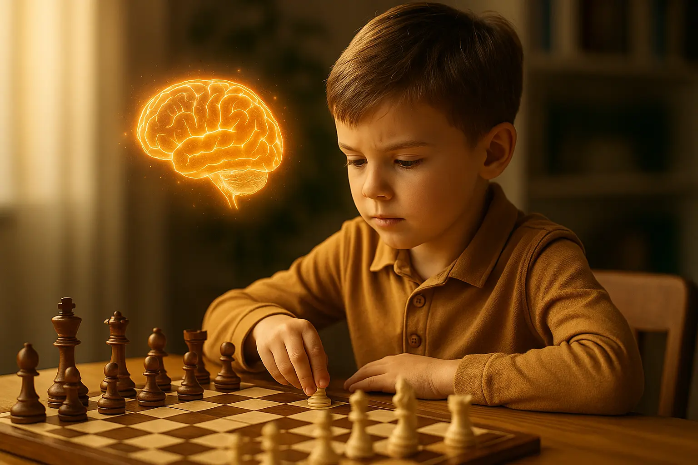

"Les échecs rendent intelligent" : combien de fois avez-vous entendu cette affirmation ? Mais qu'en est-il vraiment ? Les échecs augmentent-ils le QI ? Améliorent-ils les résultats scolaires ? Ou n'est-ce qu'un mythe bien ancré ?
En tant que professeur d'échecs depuis 3 ans, j'ai vu des transformations spectaculaires chez mes élèves. Mais en tant que passionné de science, je voulais savoir ce que disent réellement les études.
Dans cet article, je vais analyser les recherches scientifiques sur le lien entre échecs et intelligence, en séparant les faits des croyances. Vous allez découvrir ce qui marche vraiment, ce qui ne marche pas, et surtout comment maximiser les bénéfices pour votre enfant.
1. Qu'entend-on par "intelligence" ?
Avant de plonger dans les études, définissons l'intelligence. Car c'est là que beaucoup de confusions commencent.
Les différents types d'intelligence
Les psychologues distinguent plusieurs formes d'intelligence :
Les 3 grandes catégories
- Intelligence fluide : capacité à résoudre des problèmes nouveaux, raisonner de manière abstraite
- Intelligence cristallisée : connaissances accumulées, vocabulaire, culture générale
- Intelligence pratique : adaptation à l'environnement, résolution de problèmes du quotidien
Pourquoi c'est important ? Parce que les études sur les échecs ne mesurent pas toutes la même chose. Certaines testent le QI (intelligence fluide + cristallisée), d'autres la mémoire, d'autres encore les performances scolaires.
"Quand un parent me dit 'je veux que mon enfant devienne plus intelligent', je demande toujours : 'Plus intelligent comment ? En maths ? En créativité ? En résolution de problèmes ?'"
La bonne nouvelle : Les échecs touchent à plusieurs de ces intelligences. Mais pas toutes de la même façon. Pour un panorama complet, consultez notre article sur les bienfaits des échecs pour les enfants dès 5 ans.
2. Les échecs augmentent-ils le QI ? (spoiler : c'est compliqué)
C'est LA question que tout le monde se pose. Et la réponse n'est pas simple.
Ce que disent les études
Voici les 3 études majeures qui ont testé l'impact des échecs sur le QI :
Étude 1 : le projet vénézuélien « Learning to Think » (1979-1984)
Protocole : plus de 4 000 élèves du primaire, cours d'échecs intégrés au programme scolaire
Résultats annoncés : une hausse du QI mesuré chez les élèves ayant suivi les cours
Limite majeure : ce projet gouvernemental n'a jamais été publié dans une revue scientifique à comité de lecture, et les chiffres qui circulent varient fortement d'une source à l'autre. À considérer comme un indice historique, pas comme une preuve.
Étude 2 : Scholz et al., Allemagne (2008)
Protocole : des classes de quatre écoles allemandes accueillant des enfants en difficulté d'apprentissage, tirées au sort pour remplacer une heure de maths par une heure d'échecs pendant une année scolaire
Résultats : progrès significativement plus marqués en calcul simple et en comptage chez les élèves ayant fait des échecs
Mais : aucune différence sur la concentration ni sur le calcul écrit entre les deux groupes — ce qui invite à la prudence sur les promesses de « meilleure concentration ». Voir l'étude
Étude 3 : la méta-analyse de Sala & Gobet (2016)
Protocole : l'analyse la plus solide à ce jour, qui regroupe 24 études et plus de 5 000 enfants
Résultats : un effet réel mais modéré en mathématiques et sur les capacités cognitives générales, plus faible en lecture
Réserve des auteurs eux-mêmes : presque aucune de ces études ne comparait les échecs à une autre activité encadrée. Une partie des gains pourrait donc venir de l'attention et de la nouveauté, pas des échecs en tant que tels. Voir la méta-analyse
Mon analyse (en tant que prof et passionné de science)
Voici ce que je comprends de ces études :
- Les échecs améliorent certaines capacités cognitives (calcul, visualisation spatiale, logique)
- Mais ces améliorations ne se traduisent pas toujours par une augmentation du QI global
- L'effet dépend énormément de la méthode d'enseignement et de l'engagement de l'enfant
Attention au marketing
Beaucoup de sites et de clubs d'échecs promettent "+10 points de QI". C'est exagéré. Les études sérieuses montrent des effets plus modestes et spécifiques.
Ce que je dis à mes élèves (et leurs parents) : "Ne cherchez pas à augmenter le QI de votre enfant. Cherchez à développer des compétences utiles : concentration, patience, résolution de problèmes. Le reste suivra naturellement."
3. Impact sur la mémoire : ce qui est prouvé
Si les résultats sur le QI sont nuancés, ceux sur la mémoire sont beaucoup plus clairs.
Les types de mémoire développés
Mémoire de travail
Définition : Capacité à maintenir et manipuler des informations à court terme
Impact des échecs : c'est la capacité la plus directement sollicitée à chaque coup, et plusieurs travaux sur l'entraînement aux échecs chez l'enfant rapportent des progrès sur les tests de mémoire de travail
Exemple concret : Calculer mentalement 3-4 coups à l'avance
Mémoire à long terme
Définition : Capacité à stocker et récupérer des informations durables
Impact des échecs : Les joueurs experts peuvent mémoriser des milliers de positions
Exemple concret : Reconnaître instantanément des schémas tactiques
Ce que ça signifie concrètement pour votre enfant
Après 6 mois de pratique régulière, je constate chez mes élèves :
- Moins d'oublis (devoirs, affaires scolaires)
- Meilleure capacité à suivre des instructions en plusieurs étapes
- Amélioration en mathématiques (problèmes à plusieurs étapes)
- Lecture plus fluide (meilleure rétention de l'information lue)
"Ma fille de 9 ans a commencé les échecs en septembre. En janvier, sa maîtresse m'a dit : 'Je ne sais pas ce que vous avez fait, mais Sophie retient maintenant toutes les consignes du premier coup.' Je n'avais rien fait... à part l'inscrire aux échecs."
Pourquoi ça marche ? Les échecs entraînent la mémoire de travail de manière intensive et ludique. À chaque partie, l'enfant doit jongler avec des dizaines d'informations simultanément.
4. Concentration et attention : les effets mesurables
Ici, les preuves sont indiscutables. Les échecs sont un excellent entraînement attentionnel.
Les 3 types d'attention développés
1. Attention soutenue
Ce que c'est : Capacité à rester concentré sur une tâche longue
Impact des échecs : Une partie d'échecs dure 20-60 minutes. C'est un entraînement naturel de l'attention soutenue.
À nuancer : c'est ce que j'observe en cours, mais les études contrôlées sont beaucoup moins nettes sur ce point que sur le calcul — Scholz et al. (2008) ne trouvent aucun écart de concentration entre classes avec et sans échecs.
2. Attention sélective
Ce que c'est : Capacité à se concentrer sur l'essentiel en ignorant les distractions
Impact des échecs : L'enfant apprend à filtrer les coups inutiles pour se concentrer sur les menaces réelles
Résultat : Moins de distraction en classe, meilleure écoute
3. Attention partagée
Ce que c'est : Capacité à traiter plusieurs informations en même temps
Impact des échecs : Surveiller plusieurs zones de l'échiquier simultanément
Résultat : Meilleure gestion des tâches multiples
Comparaison avec d'autres activités
| Activité | Attention soutenue | Attention sélective | Attention partagée |
|---|---|---|---|
| Échecs | ⭐⭐⭐⭐⭐ | ⭐⭐⭐⭐⭐ | ⭐⭐⭐⭐ |
| Jeux vidéo | ⭐⭐⭐ | ⭐⭐⭐⭐ | ⭐⭐⭐⭐⭐ |
| Lecture | ⭐⭐⭐⭐ | ⭐⭐ | ⭐ |
| Sport | ⭐⭐⭐ | ⭐⭐⭐ | ⭐⭐⭐ |
Point important : Les échecs sont l'une des rares activités qui développent les 3 types d'attention de manière équilibrée. Ces effets sont particulièrement marqués chez les enfants avec TDAH, pour qui les échecs améliorent la concentration.
5. Échecs et résultats scolaires : le lien scientifique
Voici la question qui intéresse tous les parents : les échecs améliorent-ils les notes ?
Les grandes études sur les performances académiques
Les programmes scolaires new-yorkais (années 1990)
Ce qui a été fait : des programmes d'échecs déployés dans des écoles de quartiers défavorisés, suivis par des rapports d'évaluation qui concluaient à des progrès en lecture et à un climat scolaire apaisé.
Pourquoi je ne cite pas de chiffres : ces rapports n'ont pas été publiés dans des revues à comité de lecture, portaient sur des effectifs limités et sont souvent recopiés en ligne avec des chiffres qui changent d'un site à l'autre. Ils sont encourageants, ils ne sont pas une preuve.
La méta-analyse de Sala & Gobet (2016)
Analyse : 24 études, plus de 5 000 enfants — la synthèse la plus sérieuse dont on dispose
Conclusion : Impact positif modéré sur :
- Mathématiques : effet le plus net
- Lecture/compréhension : effet plus faible
- Capacités cognitives générales : effet modéré
Et la réserve qui va avec : les auteurs soulignent que faute de comparaison avec une autre activité encadrée, une part de ces gains pourrait relever de l'effet de nouveauté. Ils estiment par ailleurs qu'il faut au minimum une vingtaine d'heures de pratique — soit une séance par semaine sur une année scolaire — pour espérer un bénéfice réel. Voir la méta-analyse
Pourquoi ça marche (et quand ça ne marche pas)
Les échecs améliorent les résultats scolaires quand :
- ✅ L'enseignement est régulier (au moins 1h/semaine)
- ✅ L'enfant est motivé et engagé
- ✅ Le professeur fait des liens explicites avec les matières scolaires
- ✅ La pratique dure au moins 6 mois
Les échecs n'améliorent PAS automatiquement les notes quand :
- ❌ C'est une activité imposée sans motivation
- ❌ La pratique est sporadique (1 fois par mois)
- ❌ L'enfant se contente de jouer sans réfléchir
- ❌ Il n'y a pas de suivi pédagogique
Ne promettez pas de miracle
Les échecs ne vont pas transformer un élève en difficulté en premier de classe. Mais ils peuvent donner un coup de pouce significatif, surtout en mathématiques et en résolution de problèmes.
Les matières les plus impactées
- Mathématiques : Logique, calcul mental, géométrie spatiale — c'est là que l'effet est le mieux établi
- Lecture/compréhension : Concentration, analyse de texte — effet plus faible
- Sciences : Méthode scientifique, raisonnement hypothético-déductif — proximité logique évidente, mais peu de données solides
- Langues : Aucun effet démontré ; ne comptez pas dessus
6. Les compétences "transférables" : mythe ou réalité ?
On entend souvent : "Les échecs apprennent à réfléchir avant d'agir", "Les échecs développent la patience", etc. Est-ce vrai ?
Ce qui se transfère vraiment
SOLIDE : Planification et anticipation
C'est le cœur même du jeu : on ne peut pas jouer correctement sans anticiper et planifier. C'est aussi ce que je vois progresser le plus vite chez mes élèves.
Exemple : Organiser son travail scolaire, gérer son temps
OBSERVÉ : Gestion de l'impulsivité
Le jeu sanctionne immédiatement le coup joué trop vite. Avec le temps, les enfants prennent l'habitude de vérifier avant d'agir — un effet que je constate en cours, même s'il est difficile à mesurer précisément.
Exemple : Prendre le temps de lire l'énoncé d'un problème en entier
SOLIDE : Résolution de problèmes
Les échecs entraînent à décomposer un problème complexe en sous-problèmes
Exemple : Aborder un exercice de maths en plusieurs étapes
PARTIELLEMENT PROUVÉ : Créativité
Certaines études montrent un effet, d'autres non. Dépend du style d'enseignement
Mon avis : Les échecs développent la créativité tactique, mais pas forcément artistique
PAS PROUVÉ : Confiance en soi généralisée
Les échecs peuvent améliorer la confiance dans le jeu, mais cela ne se transfère pas automatiquement à d'autres domaines
Exception : Chez les enfants timides qui progressent visiblement
MYTHE : Patience automatique
Un enfant impatient dans la vie restera souvent impatient aux échecs (et vice-versa). Le lien n'est pas direct
Nuance : On peut l'entraîner, mais ça prend du temps
Le problème du "transfert"
En psychologie cognitive, on parle de "transfert" : une compétence apprise dans un domaine se transfère-t-elle à un autre ?
"Le cerveau n'est pas un muscle qu'on entraîne de manière générale. C'est un ensemble de systèmes spécialisés. Apprendre les échecs rend bon aux échecs... et à certaines tâches similaires."
Ce que ça veut dire : Les bénéfices des échecs sont réels mais ciblés. Ne vous attendez pas à ce que votre enfant devienne soudainement excellent en tout.
Comment maximiser le transfert
Pour que les compétences se transfèrent mieux :
- Faites des liens explicites : "Tu vois, aux échecs tu réfléchis avant de bouger. C'est la même chose pour tes devoirs."
- Valorisez le processus, pas le résultat : "Tu as bien réfléchi avant de jouer, bravo !"
- Encouragez la réflexion méta-cognitive : "Comment as-tu fait pour trouver ce coup ?"
7. Les limites des études (ce qu'elles ne disent pas)
Soyons honnêtes : les études scientifiques ont leurs limites. Voici ce qu'il faut savoir pour garder un regard critique.
Biais méthodologiques fréquents
1. Biais de sélection
Beaucoup d'études comparent des joueurs d'échecs à des non-joueurs. Problème : Les enfants qui choisissent les échecs sont peut-être déjà plus patients, plus concentrés, ou plus intéressés par les activités intellectuelles.
Solution : Chercher des études randomisées (attribution aléatoire des participants)
2. Durée limitée
La plupart des études durent 6 mois à 2 ans. Problème : On ne sait pas si les effets persistent à long terme.
Ce qu'on sait : Les joueurs qui continuent au-delà de 3 ans semblent conserver les bénéfices
3. Effet Hawthorne
Quand on étudie un groupe, le simple fait d'être observé peut améliorer les performances. Problème : Difficile de savoir si c'est les échecs ou l'attention portée aux enfants qui fait la différence.
Ce qu'on ne sait pas encore
- Quel est l'âge optimal pour commencer ?
- Quelle est la dose minimale efficace (30 min ? 1h ? 2h par semaine ?)
- Les effets sont-ils cumulatifs ou plafonnent-ils après un certain niveau ?
- Y a-t-il des différences selon le profil cognitif de l'enfant ?
Mon avis de praticien
Après 3 ans d'enseignement et une vingtaine d'élèves, voici ce que je constate :
Les échecs ne sont pas une pilule magique. Mais c'est l'une des rares activités qui combine : plaisir, défi intellectuel et développement de compétences utiles. C'est déjà énorme.
8. Comment maximiser les bénéfices pour votre enfant
Les échecs peuvent rendre votre enfant plus intelligent. Mais seulement si vous faites ça bien. Pour une méthode pas à pas, découvrez comment apprendre les échecs à un enfant efficacement. Voici comment.
Les 7 règles d'or
Commencez jeune (mais pas trop)
Âge idéal : 5-8 ans. Assez mature pour comprendre les règles, assez jeune pour que le cerveau soit plastique.
Trop tôt (3-4 ans) : Risque de frustration
Plus tard (10+ ans) : Possible, mais progression plus lente
Régularité > Intensité
Mieux vaut : 3 x 30 min par semaine qu'une session de 3h le dimanche
Le cerveau apprend mieux avec des répétitions espacées
Privilégiez la réflexion au blitz
Le blitz (parties rapides) est amusant mais développe peu les capacités cognitives
Privilégiez : Parties lentes (15-30 min), puzzles, analyses
Encouragez l'analyse post-partie
C'est après la partie que se fait l'apprentissage profond
Questions à poser : "Pourquoi as-tu joué ce coup ?", "Qu'est-ce que tu aurais pu faire mieux ?"
Faites des liens avec la vie quotidienne
Exemple : "Aux échecs, tu réfléchis avant d'agir. C'est pareil quand tu fais tes devoirs."
C'est ce qui favorise le transfert des compétences
Valorisez l'effort, pas le talent
Évitez : "Tu es doué !"
Préférez : "Tu as bien travaillé, ça se voit dans ta progression !"
C'est la mentalité de croissance (growth mindset)
Gardez le plaisir avant tout
Si votre enfant n'aime pas les échecs, forcez pas. Les bénéfices cognitifs disparaissent sans motivation intrinsèque.
Astuce : Variez les formats (puzzles, parties, histoires d'échecs)
Erreurs à éviter
Attendre des résultats immédiats
Les effets cognitifs prennent 6 mois minimum
Comparer avec d'autres enfants
Chaque enfant progresse à son rythme
Négliger l'aspect ludique
Si c'est une corvée, ça ne marchera pas
Laisser jouer sans guidance
Un bon professeur ou parent impliqué fait toute la différence
9. Conclusion : alors, les échecs rendent-ils intelligent ?
Après avoir analysé des dizaines d'études et observé une vingtaine d'élèves, voici ma réponse nuancée :
La réponse courte
Oui, mais pas comme vous le pensez.
Les échecs ne vont pas augmenter le QI de votre enfant de 20 points. Mais ils vont développer des compétences cognitives spécifiques et mesurables : mémoire de travail, concentration, planification, calcul mental.
Ce qui est le mieux étayé
- Un effet positif modéré sur les résultats en mathématiques, à condition d'une pratique régulière sur plusieurs mois
- Un effet modéré sur les capacités cognitives générales
- Le développement de la planification et de l'anticipation, indissociables du jeu lui-même
Ce qui est incertain ou exagéré
- Les promesses de gain de QI chiffré (effets modestes, variables, et mal établis)
- Le gain de concentration : les études contrôlées ne le retrouvent pas
- Le transfert automatique de la patience
- L'amélioration de la confiance en soi généralisée
- Le développement de la créativité artistique
Et une limite qui vaut pour tout ce qui précède : très peu d'études comparent les échecs à une autre activité encadrée. Une partie des bénéfices observés vient probablement du fait qu'un adulte s'occupe de l'enfant une heure par semaine sur une activité exigeante — ce qui reste une bonne nouvelle, mais n'est pas propre aux échecs.
Mon conseil final
Ne faites pas jouer votre enfant aux échecs pour qu'il devienne intelligent. Faites-le jouer parce que c'est une activité riche, stimulante et amusante qui, en prime, développe des compétences utiles.
Si votre enfant prend du plaisir et progresse, les bénéfices cognitifs suivront naturellement. Si vous le forcez parce que "c'est bon pour son intelligence", vous obtiendrez l'effet inverse.
Vous voulez que votre enfant profite des bienfaits cognitifs des échecs ?
Je propose des cours d'échecs adaptés aux enfants dès 5 ans, avec une pédagogie basée sur le plaisir et la progression durable.
Premier cours OFFERT – Contactez-moiArticle recommandé
Vous voulez comprendre comment optimiser l'apprentissage de votre enfant ?
Comment Apprendre les Échecs à un Enfant : Le Guide Complet La méthode complète pour enseigner les échecs intelligemment et efficacement →
Article rédigé par Nicolas Musicki, professeur d'échecs à Paris et Versailles
Retour à l'accueil |
Me contacter
Questions fréquentes
Les échecs augmentent-ils le QI des enfants ?
Les effets des échecs sur le QI global sont modestes et mal établis. La méta-analyse de Sala et Gobet (2016), qui regroupe 24 études, conclut à un effet positif mais modéré sur les capacités cognitives générales, et ses auteurs soulignent que très peu d'études comparent les échecs à une autre activité encadrée. Les échecs développent surtout des capacités spécifiques : calcul mental, visualisation spatiale et logique. Les promesses de gain de QI chiffré sont à écarter.
Les échecs améliorent-ils les résultats scolaires ?
Oui, modérément. La méta-analyse de Sala et Gobet (2016), qui regroupe 24 études et plus de 5 000 enfants, conclut à un effet positif surtout en mathématiques, plus faible en lecture. Ses auteurs estiment qu'il faut au minimum une vingtaine d'heures de pratique, soit environ une séance par semaine sur une année scolaire, pour espérer un bénéfice réel.
À quel âge un enfant doit-il commencer les échecs ?
L'âge idéal pour commencer les échecs se situe entre 5 et 8 ans : l'enfant est assez mature pour comprendre les règles et son cerveau encore très plastique. Avant 3-4 ans, il y a un risque de frustration ; après 10 ans, c'est tout à fait possible mais la progression est plus lente.